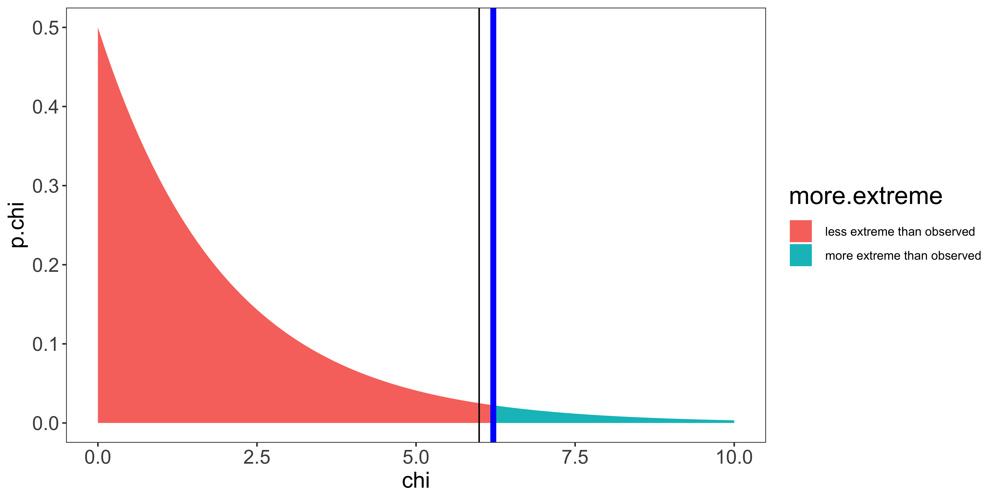

Pearson’s Chi-squared test
If we have counts in two categories (e.g. heads or tails; women or men; democrat or republican; etc.) we can test whether the distribution of observations deviates from a null hypothesis distribution via a Binomial test (where the null hypothesis specifies the probability/proportion of “success” (e.g., heads/women/democrats/whatever): the parameter \(\theta\) or \(p\)).
But what if we have counts in more than two categories? For instance, if we don’t have a bipartisan system, but have, say “Tory”, “Labour”, and “Liberal democrats” (as in the UK some time ago), and want to test the distribution of these political parties to some null hypothesis about the proportion of each that we expect to see (e.g., p=1/3 for all three). I this case, we can no longer do a Binomial test, and we turn instead to (Karl) Pearson’s Chi-squared test (which I will often write as \(\chi^2\)).
There are two ways that the Chi-squared test is used:
- comparing the observed distribution to some theoretical distribution pre-specified ahead of time: to test the “Goodness of fit” of the theoretical distribution to the observations;
- testing for “independence” between different factors (which, technically, is just a specific theoretical distribution, with some extra parameters that must be estimated from the data).
We will first talk about the practicalities of running a chi-squared test, and then we will talk about the probabilistic rationale for the test, and when that rationale breaks down (and what to do about it).
“Goodness of fit” test
The simplest use of Chi-squared tests is to compare some observed counts to an expected distribution of proportions to assess the “goodness of fit” of the theoretical distribution with the observations.
Let’s say we survey students about their political affiliation. We find: 30 Democrats, 8 Republicans, and 15 Independents. We want to compare to a theoretical (null hypothesis) distribution; according to this null hypothesis, 50% should be Democrats, 30% should be republicans, and 20% should be independents.
Implementation in R
In R we can do this via the chisq.test function, although interfacing with this function can be a bit awkward.
df = data.frame(party = c(replicate(30, "democrat"),
replicate(8, "republican"),
replicate(15, "independent")))
table(df$party)##
## democrat independent republican
## 30 15 8# the null hypothesis distribution of categories.
(H0.p = c("democrat"=0.5, "republican"=0.3, "independent"=0.2))## democrat republican independent
## 0.5 0.3 0.2What we want to do is provide the table summary of the observed categories, and the vector of null hypothesis probabilities to chisq.test; however, we must make sure that their order is the same (which they are not now!). We can do this by indexing with a sorted name vector:
sort(names(H0.p))## [1] "democrat" "independent" "republican"(sorted.data.table = table(df$party)[sort(names(H0.p))])##
## democrat independent republican
## 30 15 8(sorted.H0.p = H0.p[sort(names(H0.p))])## democrat independent republican
## 0.5 0.2 0.3chisq.test(sorted.data.table, p=sorted.H0.p)##
## Chi-squared test for given probabilities
##
## data: sorted.data.table
## X-squared = 6.2138, df = 2, p-value = 0.04474What we get out here is a \(\chi^2\) statistic, a degrees of freedom, and a p-value. To understand what these things are, we need to work through the calculations behind this test.
Chi-squared test calculations
The \(\chi^2\) statistic is defined as:
\[\chi^2 = \sum\limits_{i=1}^c \frac{(O_i-E_i)^2}{E_i}\]
where \(c\) is the number of columns (here 3: democrats, republicans, independents);
\(O_i\) is the observed count in a given cell;
\(E_i\) is the expected count: \(E_i = p_i * n\), where \(n\) is the total count from all cells, and \(p_i\) is the theoretical expected probability in a given cell.
We can reproduce this calculation in R:
o = sorted.data.table
p = sorted.H0.p
e = p*sum(o)
(chi.sq.statistic = sum((o-e)^2/e))## [1] 6.213836This chi-squared statistic corresponds to the sum of the squared deviations of the obesrved cell counts from the expected (under the null hypothesis) cell counts. Bigger deviations mean that our data are further from the null hypothesis prediction.
Below we show this calculation in tabular form, to clarify how it all works.
| Democrats | Republicans | Independents | |
|---|---|---|---|
| cell (\(i\)) | 1 | 2 | 3 |
| Observations (\(O_i\)) | \(O_1 = 30\) | \(O_2 = 8\) | \(O_3 = 15\) |
| Null (\(H_0\) | \(p_1 = 0.5\) | \(p_2 = 0.3\) | \(p_3 = 0.2\) |
| n = 53 | |||
| Expectation | \(E_1 = n*p_1 = 26.5\) | \(E_2 = n*p_2 = 15.9\) | \(E_3 = n*p_3 = 10.6\) |
| \((O_i-E_i)\) | 3.5 | -7.9 | 4.4 |
| \((O_i-E_i)^2\) | 12.25 | 62.41 | 19.36 |
| \(\frac{(O_i-E_i)^2}{E_i}\) | 0.462264151 | 3.925157233 | 1.826415094 |
| \(\chi^2 = \sum_i \frac{(O_i-E_i)^2}{E_i}\) | \(\chi^2 = 6.21383648\) | ||
| df = c-1 | df=3-1=2 |
The degrees of freedom (df) is given by the number of observed counts (3 here), minus the number of parameters estimated from the data to calculate the expected counts, here just one parameter: n, the total count. Consequently, the degrees of freedom will be \(df=c-1=2\)
Now that we have our \(\chi^2\) statistic, we can compare it to the null hypothesis \(\chi^2\) distribution with those degrees of freedom, to see if we have sufficiently large deviations from the null hypothesis. Specifically, we do a 1-tail test: looking only at the right tail. We can calculate the p-value in R as:
df = length(sorted.data.table)-1
(p.value = 1-pchisq(chi.sq.statistic,df))## [1] 0.04473862Alternatively, we could do the same chi-squared test by finding the critical chi-squared value to reach a particular level of \(\alpha\):
alpha = 0.05
(chi.sq.crit = qchisq(1-alpha,df))## [1] 5.991465We can look at a plot of what all of this is doing by looking at the corresponding chi-squared distribution:
chi.vals = seq(0,10,by=0.01)
df = data.frame(chi=chi.vals,
p.chi = dchisq(chi.vals, df),
more.extreme = ifelse(chi.vals>=chi.sq.statistic, "more extreme than observed", "less extreme than observed"))
ggplot(df, aes(x=chi, y=p.chi, fill=more.extreme))+
geom_area()+
geom_vline(xintercept=chi.sq.statistic, color="blue", size=2)+
geom_vline(xintercept=chi.sq.crit, color="black")+
my_theme
We see that our test statistic (6.21; blue line) is greater than the critical value (5.99; black line); or equivalently, the p-value (area under curve beyond our statistic) is smaller than \(\alpha\), meaning that seeing a chi-squared statistic at least as large as ours from samples from the null hypothesis is sufficiently small for us to reject the null hypothesis. So we do.
In other words, we reject the null hypothesis if our observed counts deviate more from the theoretically expected proportions than could be expected by chance. So, we would interpret this result as the distribution of political affiliations in the students we sampled does not follow our theoretical distribution.
The chi-squared test when used to assess whether observed counts deviate from the null is always one tail – the upper tail. However, the lower tail can be used to test whether there is too little variation around the theoretical distribution (this is rarely done in practice, but may be a useful test to see if data were faked, or if there is voter fraud).
Test for independence
A very common extension of the “goodness of fit” test is to assess independence in a contingency table.
For instance, lets say we gathered something like the following data (counting how many men and how many women reported a particular color as their favorite – out of a small set):
| Red | Green | Blue | Black | |
|---|---|---|---|---|
| Men | 4 | 2 | 9 | 2 |
| Women | 3 | 9 | 3 | 4 |
A chi-squared independence test asks whether the rate at which different colors are selected varies between men and women (or equivalently, whether the population of people who prefer different colors constitutes different proportions of men and women).
Implementation in R
First let’s make a data frame of the sort that we would have for these data:
df = rbind(data.frame(sex="male", color="red")[replicate(4, 1),],
data.frame(sex="male", color="green")[replicate(2, 1),],
data.frame(sex="male", color="blue")[replicate(9, 1),],
data.frame(sex="male", color="black")[replicate(2, 1),],
data.frame(sex="female", color="red")[replicate(3, 1),],
data.frame(sex="female", color="green")[replicate(9, 1),],
data.frame(sex="female", color="blue")[replicate(3, 1),],
data.frame(sex="female", color="black")[replicate(4, 1),])
str(df)## 'data.frame': 36 obs. of 2 variables:
## $ sex : chr "male" "male" "male" "male" ...
## $ color: chr "red" "red" "red" "red" ...table(df$sex, df$color)##
## black blue green red
## female 4 3 9 3
## male 2 9 2 4The independence test takes the table of counts, and returns a chi-squared value to measure how much the observed counts deviate from those expected if the rates were independent.
chisq.test(table(df$sex, df$color))##
## Pearson's Chi-squared test
##
## data: table(df$sex, df$color)
## X-squared = 8.1782, df = 3, p-value = 0.04247Understanding how this test is carried out requires that we talk about the calculations that go into it:
Independence test calculations
| Red | Green | Blue | Black | |
|---|---|---|---|---|
| Men | 4 | 2 | 9 | 2 |
| Women | 3 | 9 | 3 | 4 |
We will refer to these observations as \(O_{i,j}\) where \(i\) indexes the row, and \(j\) indexes the column. So the count of women who reported blue as their favorite color would be \(O_{2,3}=3\).
The total count is the sum of the counts in all cells:
\(n = \sum_{i=1}^r \sum_{j=1}^c O_{i,j}\)
here \(n=36\). (\(r\) refers to the number of rows – here 2; \(c\) refers to the number of columns – here 4).
Independence is a theoretical claim about the contingency table. Using the language of probability, it says that the probability of a conjunction should be equal to the product of the marginal probabilities. In other words:
\(P(A=a, B=b) = P(A=a)P(B=b)\).
With respect to our contingency table:
\(P(G=\text{men }, C=\text{red}) = P(G=\text{men})P(C=\text{red})\)
To calculate the expected counts under the null hypothesis of independence, we first estimate the marginal probabilities (e.g., P(men), P(women), etc.).
We calculate two sets of marginal probabilities, one for the rows, another for the columns (in theory, we could have a higher dimensional contingency table; but in practice they are usually limited to 2D row x column arrangements).
We can calculate the marginal probabilities by summing over rows or columns, respectively:
\(p_{i,\cdot} = \sum_{j=1}^c O_{i,j} / n\)
(e.g., \(P(men) = p_{1,\cdot} = (4+2+9+2)/36)\))
\(p_{\cdot,j} = \sum_{i=1}^r O_{i,j} / n\)
(e.g., \(P(green) = p_{\cdot,2} = (2+9)/36)\))
The “expected” count in each cell will be \(E_{i,j} = n p_{i,\cdot} p_{\cdot,j}\).
The \(p_{i,\cdot} p_{\cdot,j}\) is the theoretical prediction of independence, and we multiply by \(n\) to get the expected count. Shown in the table below.
| \(E_{i,j}\) | Red | Green | Blue | Black | \(P_{i,\cdot}\) |
|---|---|---|---|---|---|
| Men | 3.3 | 5.2 | 5.7 | 2.8 | 0.472 |
| Women | 3.7 | 5.8 | 6.3 | 3.2 | 0.528 |
| \(P_{\cdot,j}\) | 0.19444 | 0.30555 | 0.333 | 0.1667 |
Most books skip the step of calculating marginal probabilities for chi-squared tests for independence, and instead expected counts are calculated directly. Note that the expressions are algebraically equivalent. I prefer to expose the step of calculating marginal probabilities for the sake of displaying the logic of the test.
\(E_{i,j} = \frac{\sum_{a=1}^r O_{a,j} \sum_{b=1}^c O_{i,b}}{n}\)
This can be read as (number of observations in the column)*(number of observations in the row)/(number of observations in the total table).
We can now calculate the deviation of each cell:
\(\frac{(O_{i,j} - E_{i,j})^2}{E_{i,j}}\)
| \(\frac{(O_{i,j} - E_{i,j})^2}{E_{i,j}}\) | Red | Green | Blue | Black | |
|---|---|---|---|---|---|
| Men | 0.15 | 1.96 | 1.96 | 0.25 | |
| Women | 0.13 | 1.76 | 1.75 | 0.22 |
The test statistic is the sum of all of these deviations:
\(\chi^2 = \sum_{i=1}^r \sum_{j=1}^c \frac{(O_{i,j} - E_{i,j})^2}{E_{i,j}}\)
In our case the test statistic will be: \(\chi^2 = 8.18\).
The degrees of freedom are again, the number of cells (here 8) minus the number of parameters we estimated from the data: 5 (\(n\), \(p_{\cdot,1}\), \(p_{\cdot,2}\), \(p_{\cdot,3}\), and \(p_{1,\cdot}\)). (note \(p_{\cdot,4}=1-p_{\cdot,1}-p_{\cdot,2}-p_{\cdot,3}\), and \(p_{2,\cdot}=1-p_{1,\cdot}\), so they do not count as extra estimated parameters.)
So our \(df = 8-5 = 3\).
The shortcut to estimating the degrees of freedom for a test for independence is:
\(df = (r-1)(c-1)\); which will always give us the same answer (here 3).
We can calculate the p-value in R as:
1-pchisq(w,df) where \(w=\chi^2\) – our test statistic, and \(df\) are our degrees of freedom.
In our case:
p-value = 1-pchisq(8.18,3) = 0.0441
We can also calculate a critical \(\chi^2\) value, as we did before.
In short, the chi-squared independence test is the same thing as a goodness of fit test, except the null hypothesis does not specify all the probabilities, but instead specifies the relationship between the marginal and joint probabilities. Consequently, to get expected counts, we have to estimate not only the total count (\(n\)) from the data, but also the marginal probabilities. This changes how we calculate both the expected counts as well as the degrees of freedom.
More than 2-way contingency table
Chi-squared tests of independence for 2-way contingency tables are by far the most common, but in principle, we can scale the same logic up to contingency tables with more than 2 factors. In practice, I have never seen this done, because (a) it is a test for complete independence of all factors, and a rejection of such a claim of independence is hard to interpret, so people are more interested in the independence of two factors in isolation, and (b) this functionality is rarely built into statistics software.
Mathematical rationale
The Chi-squared test is based on the \(\chi^2\) distribution, and the Normal approximation to the binomial distribution.
The binomial distribution of the number of successes \(k\) out of \(n\) attempts (where each attempt \(w_i\) is independent and has probability of success \(p\)), is written as \(k \sim \text{Binomial}(n,p)\). If we label each success as 1, and each failure as 0, then \(k = \sum_{i=1}^n w_i\). The central limit theorem says that when \(n\) is sufficiently large, we can approximate the distribution of \(k\) as a Normal distribution with mean \(np\) and variance \(np(1-p)\) (provided some continuity correction).
If \(x_i \sim \text{Normal}(0,1)\), then the sum of \(m\) squared x values is distributed as a chi-squared distribution with \(n\) degrees of freedom: \(\sum_{i=1}^m x_i^2 \sim \chi^2(m)\). In other words, the chi-squared distribution is the distribution of \(m\) squared z-scores.
The Chi-squared test relies on the normal approximation to the binomial to calculate the z-score of the deviation of the count in each cell compared to that expected under the null hypothesis; then sums these z-scores (this isn’t quite right, but it conveys the intuition).
If the null hypothesis is true, then this sum of z-scored deviations ought to follow a Chi-squared distribution, if the observed statistic is very large compared to the null hypothesis Chi-squared distribution then we can reject the null hypothesis.
(for a more detailed mathematical description of how these notions combine, take a look at the wikipedia page.
Limitations
The chi-squared test relies on the normal approximation to the Binomial distribution of counts within each cell; the normal approximation holds when the observed and expected counts are large, but breaks down when they are small. I have seen a number of rules of thumb for “how large should the counts be to use a chi-squared test?”. In practice, it seems that folks use the chi-squared test regardless of those rules of thumb. You can look at some of these rules of thumb on wikipedia.
Wikipedia suggests using the Yates correction to alter the statistic (when cell counts are too small) to:
\(\chi^2_{\text{Yates}} = \sum_{i=1}^c \frac{(|O_{i} - E_{i}|-0.5)^2}{E_{i}}\)
Using Yate’s correction is always more conservative, meaning that the probability of Type I error is lower for a given \(\alpha\); this is desirable when counts are low because without the correction the Type I error may end up higher than \(\alpha\). (as a consequence, Yate’s correction makes Type II error higher, and thus lowers power).
The statement “the probability of Type I error is lower for a given \(\alpha\)” may be puzzling, because we usually say that \(\alpha\) is the probability of Type I error. However, this is only true in theory: when all the assumptions of a given test/model are met. When the assumptions of the test/model are not met, the test statistic does not follow the exact hypothetical distribution, and therefore the Type I error rate ends up different from \(\alpha\) – sometimes lower, sometimes higher. Obviously, the deviations from assumptions that increase Type I error rates compared to \(\alpha\) are those that we must be more careful of.
In practice, if you have particularly small counts and need to test against some theoretical distribution, I suggest doing resampling to calculate the exact null hypothesis distribution, and compute a p-value without relying on the questionable normal approximation under low cell counts (we will cover variations of this technique in the second semester). Fortunately, R’s chisq-test function warns you when cell counts are small, and suggests doing exactly this. To carry out this Monte Carlo simulation to get a p-value without assuming asymptotically normal behavior from small cell counts, set simulate.p.value=TRUE in chisq.test.
chisq.test(table(df$sex, df$color), simulate.p.value = T)##
## Pearson's Chi-squared test with simulated p-value (based on 2000 replicates)
##
## data: table(df$sex, df$color)
## X-squared = 8.1782, df = NA, p-value = 0.03698Fisher’s “exact” test
Another variant of the simulation-based chi-squared test for independence that does not rely on a normal approximation is Fisher’s exact test. In R, for a 2x2 contingency table, fisher.test() runs the exact test for independence (based on the hypergeometric distribution), for larger NxM tables it calculates a simulation based probability that these data could have been generated if the categorical variables are indeed independent. Generally, fisher.test is only used if you have a 2x2 table, and even then, rarely.
fisher.test(table(df$sex, df$color))##
## Fisher's Exact Test for Count Data
##
## data: table(df$sex, df$color)
## p-value = 0.04316
## alternative hypothesis: two.sided(Note that the chi-squared distribution based test, the chi-squared simulated p value, and the simulated p value from the fisher test function all give us slightly different p-values! None of them is more correct than another; I prefer to use the simulated chi-squared test by default.)